Windows Server · Interface graphique · PowerShell · Gestion des objets
Membre du groupe
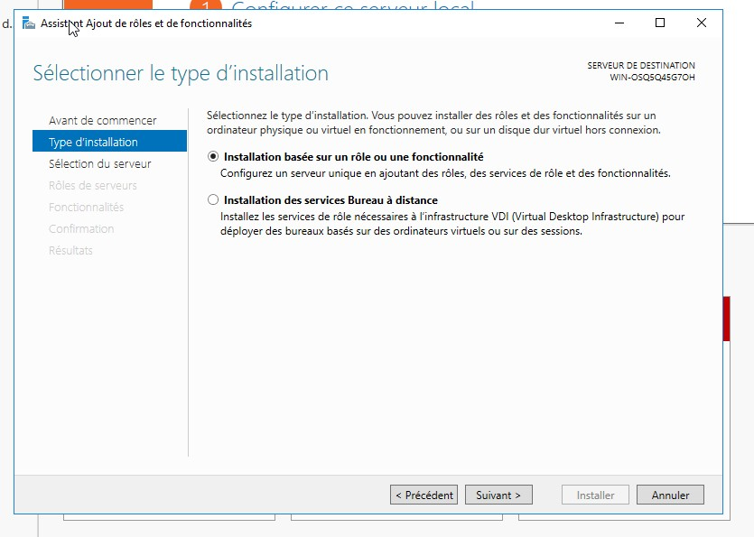
Image non disponible'">▪ Il faut choisir l'option « Installation basée sur un rôle ou une fonctionnalité », puisqu'il s'agit d'un nouveau rôle à installer et non pas d'une fonctionnalité complémentaire.
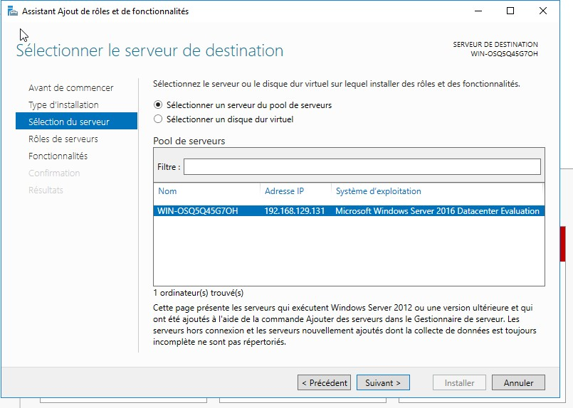
▪ Vous devez par la suite sélectionner le serveur sur lequel le rôle doit être installé dans ce cas, il n'y a qu'un seul serveur.
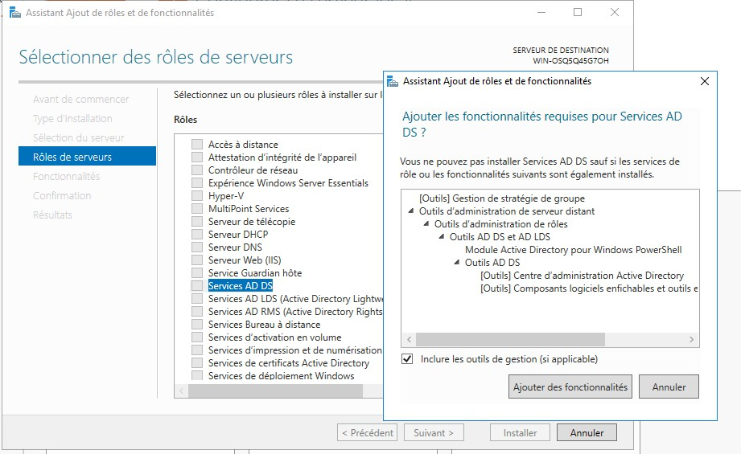
▪ Dans cette situation, nous souhaitons mettre en place un réseau d'entreprise « simple » il faut donc sélectionner uniquement « Services AD DS ».
• Lorsque la case est cochée, des fonctionnalités complémentaires vont être automatiquement sélectionnées aussi. Il est impératif d'avoir tous ces outils pour pouvoir gérer efficacement le serveur AD.
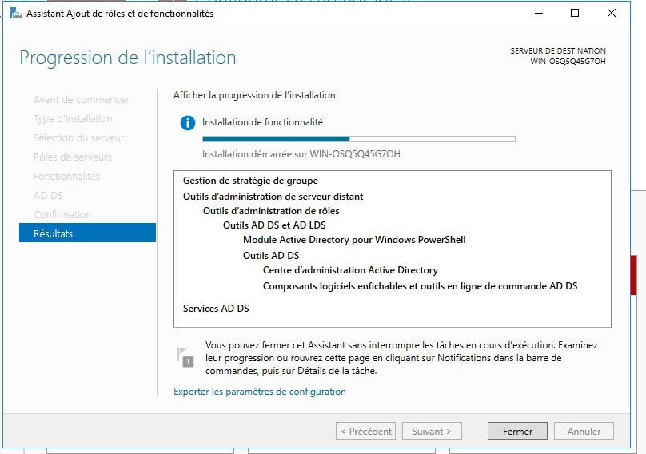
• Après la sélection du rôle AD DS et des fonctionnalités associées (automatiquement), une brève présentation du rôle sera affichée. L'installation va enfin pouvoir se lancer en cliquant sur le bouton « Suivant ».
• À la fin du processus d'installation initial, les binaires AD DS sont installés, mais AD DS n'est pas encore configuré sur ce serveur.
• Un message à cet effet s'affiche dans le Gestionnaire de serveur. Vous pouvez sélectionner le lien pour Promouvoir ce serveur en contrôleur de domaine et l'Assistant Configuration des services de domaine Active Directory s'exécute.
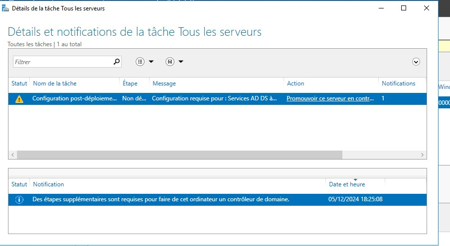
• Lorsque votre serveur est de nouveau en ligne, vous arriverez directement dans le Gestionnaire de serveur. Un bandeau jaune tout en haut de la fenêtre apparaît, vous rappelant que vous devez configurer le rôle AD DS AVEC AJOUT D'UN NOUVEL DOMAINE (UNE NOUVELLE FORÊT).
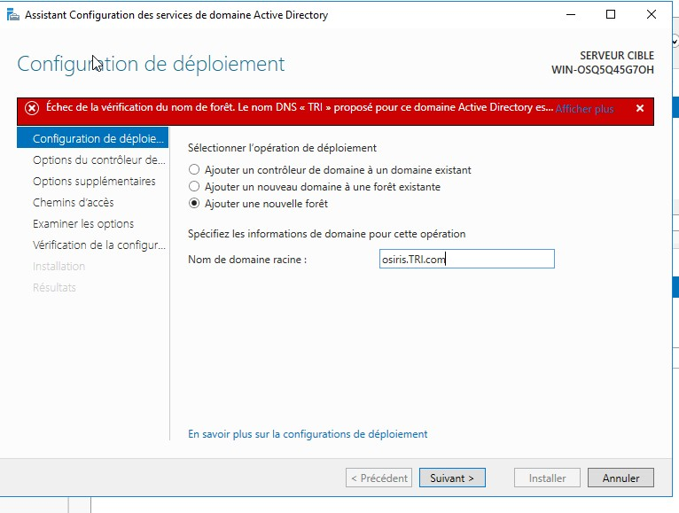
• Cliquer sur le bandeau jaune, une nouvelle fenêtre va s'ouvrir : il s'agit d'un assistant pour la configuration du rôle AD DS – passage obligatoire.
• La procédure actuelle consiste en la création d'un nouveau domaine, vous devez donc sélectionner l'option « Ajouter une nouvelle forêt ».
• Entrer le nom du domaine.
ATTENTION : Le nom de votre domaine est très important, il faut saisir un nom de domaine réel. Le renommage d'un domaine AD DS est possible, mais l'impact « technique » est très conséquent (pour les PC, les utilisateurs, les services et les logiciels).
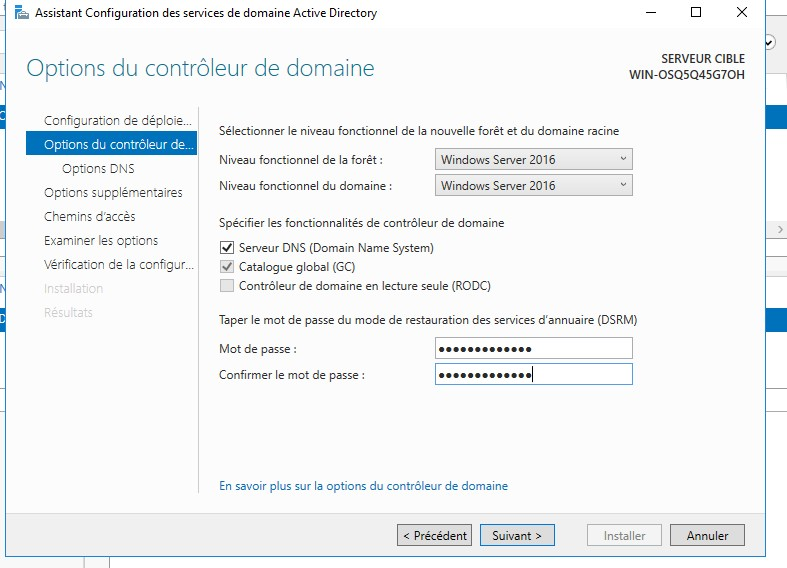
• Une fois le nom du domaine saisi, la fenêtre ci-dessus va alors s'afficher.
• Le « niveau fonctionnel » d'un domaine correspond aux services disponibles pour ce domaine. Plus le niveau fonctionnel est élevé, plus vous aurez de fonctionnalités pour vous et vos utilisateurs.
• Il est préférable d'utiliser le niveau fonctionnel le plus haut pour le domaine Active Directory Windows Server 2016.
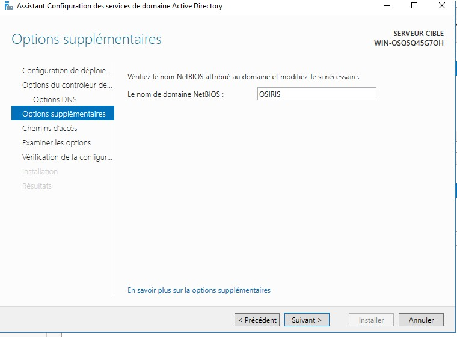
• Une seconde étape obligatoire doit être passée : le mot de passe de restauration. Ce mot de passe sera utilisé uniquement dans le cas où votre AD DS se retrouve corrompu et inaccessible, vous pourrez tenter la restauration de votre AD grâce à ce mot de passe.
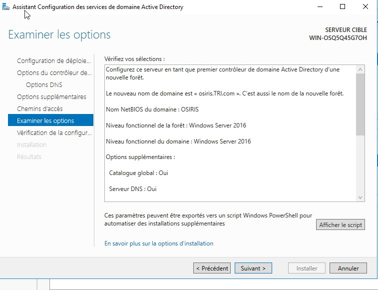
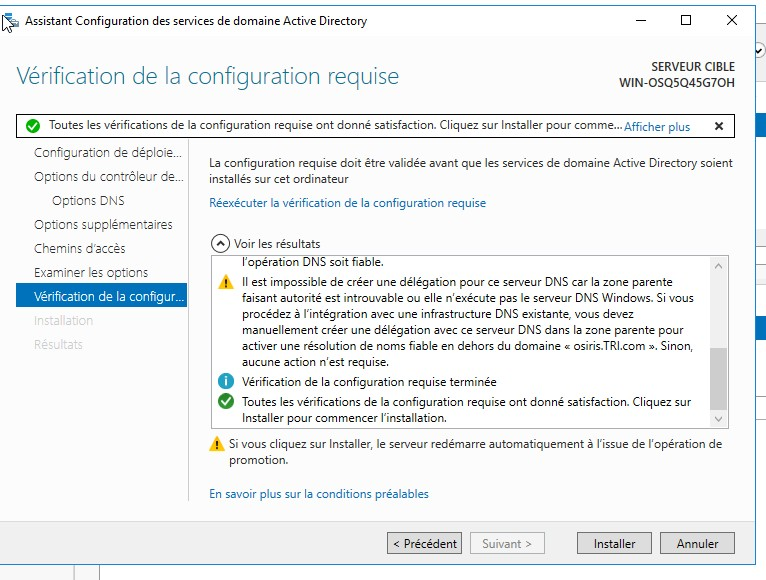
• Une dernière étape primordiale est la vérification de votre configuration d'AD DS. Windows Server est en mesure de vous dire si oui ou non les paramètres que vous avez sélectionnés sont corrects pour un domaine AD.
• Lorsque tous les paramètres « préliminaires » seront configurés, le serveur doit être obligatoirement redémarré.
• Avant d'installer AD DS, il faut récupérer le nom du serveur en utilisant la commande suivante :
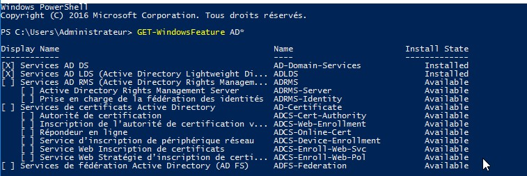
• Pour ajouter le rôle AD DS, il faut utiliser la commande :
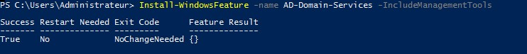
• Vérifier l'installation :
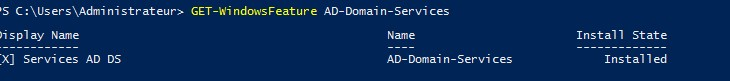
• Une fois le rôle AD DS installé, il faut configurer le serveur en tant que contrôleur de domaine pour une nouvelle forêt Active Directory.
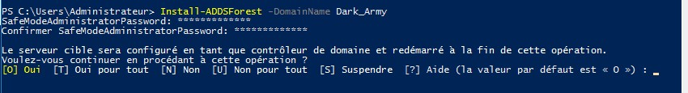
Si vous avez déjà créé une forêt sur l'interface graphique, après ce passage vous recevrez un message d'erreur de syntaxe.
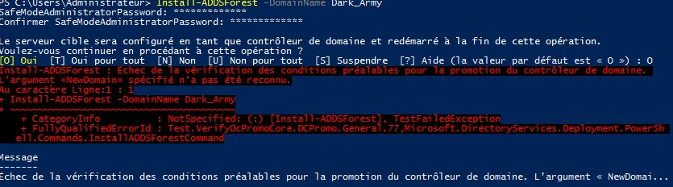
• Vérifier l'installation :
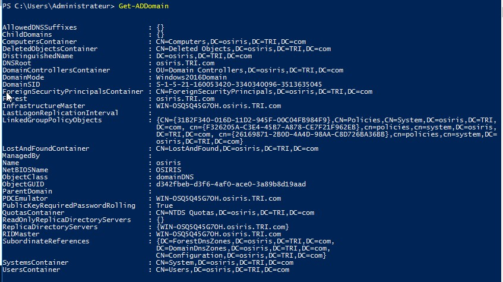
• Pour peupler notre Active Directory, il faut lancer la console Utilisateurs et ordinateurs Active Directory.
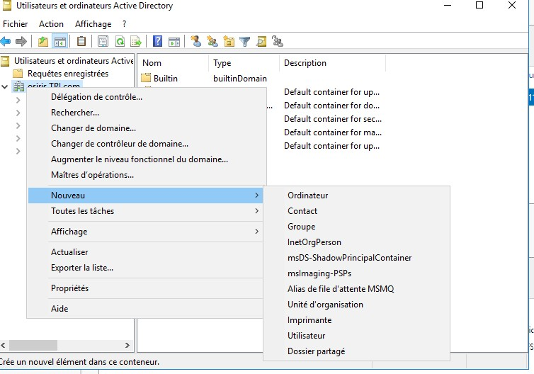
• Pour créer une unité organisationnelle afin d'y mettre l'ensemble des utilisateurs et groupes, dans l'arbre à la hauteur du domaine, faites un clic droit dans la fenêtre de droite, puis Nouveau et on choisit Unité d'organisation et on remplit.
▪ Pour créer un nouvel utilisateur dans l'unité créée, clic droit sur l'UO ensuite Nouveau puis Utilisateur.
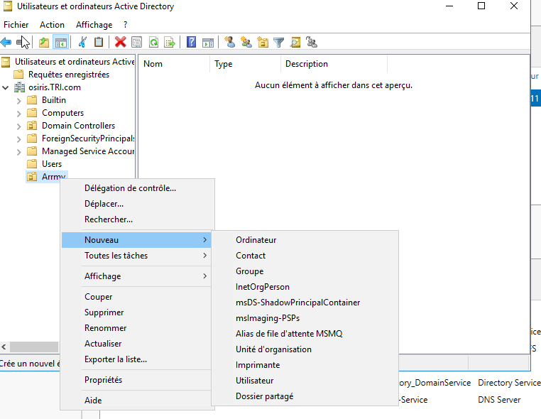
▪ Dans notre exemple, nous allons créer un utilisateur qui s'appelle Dowou Issa avec le nom d'ouverture de session Dark_army.
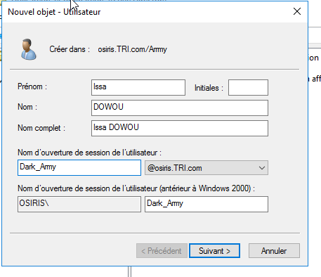
• L'utilisateur a deux moyens pour ouvrir une session :
- Saisir un mot de passe complexe. Le mot de passe doit contenir au moins 7 caractères avec au moins 3 des éléments suivants : une majuscule, une minuscule, un nombre et un symbole.
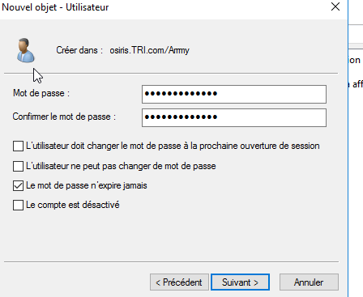
• L'option L'utilisateur doit changer le mot de passe à la prochaine ouverture de session forcera l'utilisateur à changer le mot de passe transmis à la première connexion sur le domaine. Après avoir entré le mot de passe, nous obtenons un résumé des informations de l'utilisateur.
• Cliquer sur Terminer et l'utilisateur est créé.
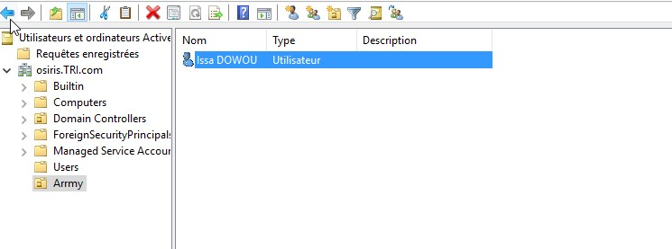
• Si on affiche les propriétés de l'utilisateur (clic droit puis Propriétés ou double-clic), on voit que l'on a beaucoup plus d'informations que dans l'assistant. On peut alors remplir le bureau, le numéro de téléphone, etc. de l'utilisateur.
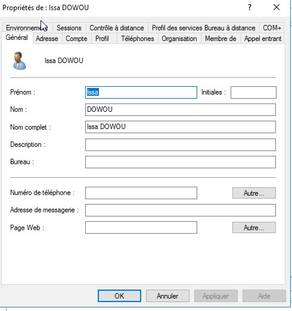
Dans l'onglet Compte on trouve :
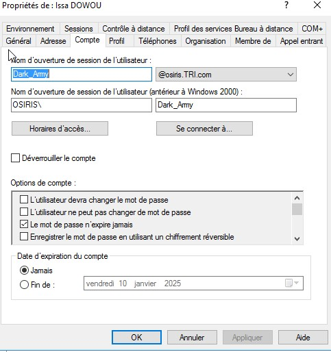
Le nom du module est <<ADuser>>. Pour obtenir ces commandes, vous pouvez utiliser la commande suivante :
Pour afficher les options de chaque commande, par exemple <<new-aduser>> :
La commande qui permet d'ajouter un utilisateur DOWOU Issa avec plusieurs options :
Important : Pour le Path, utiliser les noms utilisés pour créer le domaine.
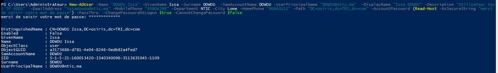
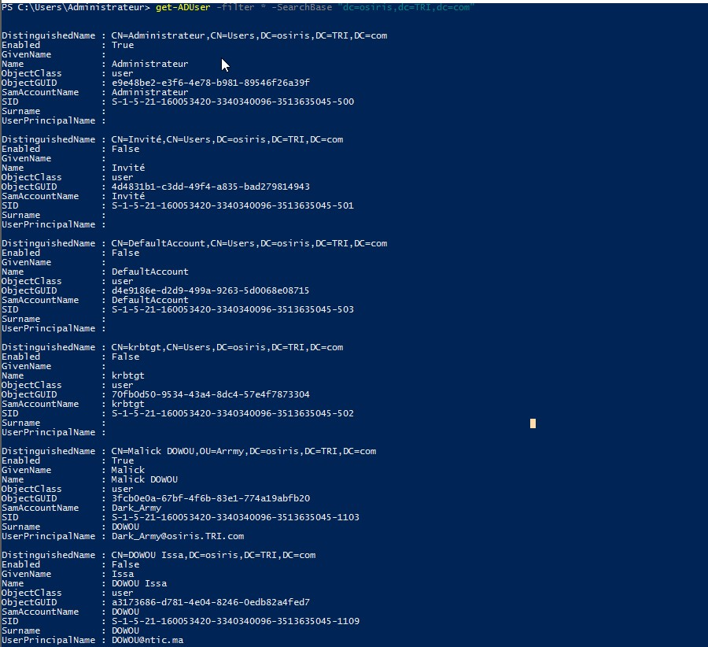
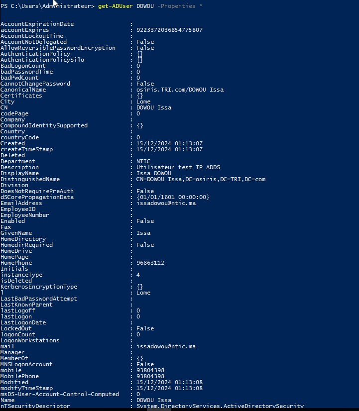